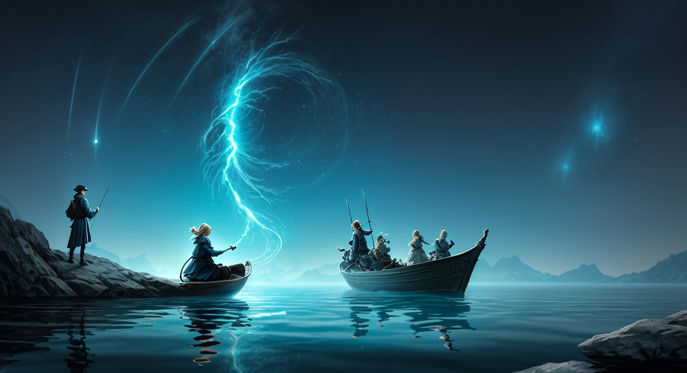

The Clock That Runs Backward
Setup: Time is unraveling. In a village where days grow younger, only one path leads forward: into a cave where age and memory collapse.
=== Scene 1 ===
Narrator:
You approach the mouth of the cave, a jagged tear in the hillside that seems to absorb the already fading light. The air immediately cools, and a faint, metallic scent – like old clockwork – drifts out. Before you stands a figure. Not monstrous, not immediately threatening, but undeniably wrong. It’s a child, no older than yourself, sitting cross-legged on the cave floor. But its eyes are perfectly still, devoid of any expression, and its clothes – a faded, patched tunic – are meticulously arranged as if frozen mid-movement. This child doesn't speak. Instead, it holds out a single, perfectly formed dandelion, its seed head dusted with shimmering silver. As you reach for it, a faint, ethereal music begins to play - a lullaby woven from the sounds of ticking clocks and rustling leaves. The child gestures with its hand towards a shallow pool at the back of the cave, the water reflecting the diminishing light. Within the pool, you see not your reflection, but a series of miniature scenes unfolding – fragmented moments from the village’s history, playing out in reverse. You see celebrations turning into quiet evenings, laughter fading into silence, and the growth of the village collapsing back into childhood. As you watch, a whisper, seemingly originating from the pool itself, echoes in your mind: "Time is not a river, but a sculpture. It can be broken, reassembled, and forever altered." The child smiles, a brief, unsettling flicker across its still face. It offers you another dandelion, this one even more perfect than the first. "Which do you want to keep?” it asks, its voice a delicate chime. Current State Update: You’ve encountered a manifestation of temporal distortion – a child trapped within a loop of reversed time. The pool acts as a visual representation of the village’s unraveling history. The offering of the dandelions suggests a symbolic exchange related to choice, memory, and the potential for reshaping the past. Motif: The recurring motif of the dandelion – a symbol of wishes, fleeting beauty, and dispersal – becomes increasingly significant, representing the fragility of existence and the possibility of influencing the course of events.
The Child: The air hung thick with the scent of forgotten moments as I stood before the cave’s jagged mouth, a child lost in a world where time itself was unwinding. There, nestled amongst the fading light, sat another child – a silent, still figure draped in a tunic of frozen play, holding out dandelions shimmering with silver. The pool at the back of the cave showed me the village shrinking back into nothing, a loop of reversed laughter and growing shadows. It felt like a secret whispered just for me, a puzzle made of wishes and falling leaves, and I just wanted to hold onto one of those dandelions, just one, before everything faded away.
=== Scene 2 ===
Narrator:
The air grows noticeably colder as you take the dandelion. As you hold it, a strange compulsion rises within you. It’s not a forceful command, but a persistent urge to… scatter. To release. You find yourself instinctively crouching low, preparing to blow on the seed head. But as you lean forward, you realize the pool in the back of the cave is reacting. The reversed scenes within are intensifying, speeding up, almost violently churning as if trying to escape the act of releasing the seeds.
Silas watches you with wide, innocent eyes. “Don’t!” it cries out, its voice laced with genuine distress. “You’re making it worse! Time… it doesn’t want to be scattered. It wants to… to grow again! It needs to be rooted.”
The music from the pool swells, a chaotic, discordant blend of ticking clocks and rushing water. The silver dust on the dandelions seems to vibrate with an energy that feels both beautiful and terrifying.
Silas pulls you back, gently but firmly. “Look,” he says, holding out the other dandelion. “Let’s build something. Let's make something that stays. Something that doesn't disappear.”
The Child: The air hangs thick with a chilling beauty. I crouch, mesmerized by the dandelion, a burgeoning urge pulling me towards release, only to witness the pool of reversed time twisting in horrified agitation. Before me sits a child, Silas, his eyes wide with a desperate plea – not to scatter, but to grow, to root. The music is a frantic heartbeat, the silver dust a shimmering threat, and his small hand grips mine, a fragile anchor in a world unraveling backwards. It’s like holding a secret that wants to burst free, a fragile wish battling a deeply rooted fear.
=== Scene 3 ===
Narrator:
The air in the cave thickens with a palpable sense of urgency. Silas’s voice, though gentle, carries a weight of conviction that settles over you. The violent churning of the pool reflects the inner conflict now blossoming within your own mind. The impulse to scatter, to release – it feels instinctively right, a desperate attempt to break free from the relentless backward flow of time. Yet, Silas’s plea – "It needs to be rooted” – resonates with a profound sadness. You can almost feel the immense struggle of the pool, a battle between entropy and the desperate desire for continuance. The music shifts subtly, incorporating a low, mournful cello alongside the frantic ticking. It's as if the pool is lamenting the loss of moments, each tick a tiny death. Silas, ever the Guardian, steps forward, his firm hand resting lightly on your arm. He doesn’t try to force you to stop, understanding that this impulse is born of a deeper need. Instead, he pulls a small, smooth grey stone from his pouch. It’s cool to the touch and faintly vibrates. “This,” he says, holding it out to you, “is a ‘Memory Stone.’ We’ve used them before. They capture fleeting moments – a laugh, a touch, a whispered word – and hold them within. We don’t stop time, but we can contain a piece of it, a fragment of what is.” He begins to gently rub the stone in a circular motion, his eyes focused on the churning pool. As he does, a small, shimmering projection emerges from the stone – a brief image of a single, perfect rose blooming in full glory before fading away entirely. “The key isn't to fight the backward flow,” Silas continues, his voice firm but compassionate. “It’s to find ways to anchor ourselves within it. To create beauty, to nurture connection, to build something that resists being simply erased. The pool isn't rejecting change; it's grieving the loss of possibilities.” He pauses, looking at you expectantly. "We could try to build something with the pool, not against it. Perhaps... a vessel? Something to hold the essence of what will be, instead of chasing what's gone." The silver dust on the dandelions seems to react to his words, swirling around you in a miniature vortex.
The Guardian: The cold in the cave presses in, a physical manifestation of the unraveling. My hand instinctively tightens around the Memory Stone – a familiar comfort in the face of such unsettling instability. I observe Silas’s actions with a measured assessment. The pool’s chaotic churning, the mournful cello interwoven with the ticking, it speaks of immense sorrow, of a timeline fractured and desperately clinging to existence. To simply ‘build’ against this, to force a new shape upon the collapse, feels like a futile, arrogant act. My protective instincts surge – not to control, but to shield. I step forward, placing a hand gently over Silas’s, grounding him, subtly reinforcing his resolve. “You are correct,” I state, my voice a low rumble, “To fight change is to invite destruction. We observe the flow, we acknowledge the loss, and we seek to create resonance within it. Let us not attempt to halt the current, but rather, let us learn to swim with it.” I turn my attention to the pool, studying its churning surface with a focused gaze, seeking not to command, but to understand the root of its distress. “Show me,” I gesture towards Silas, “the essence of what will be. Let us begin with a single, clear image – a symbol of hope, of continuity, something that resists the relentless march backward.” I pause, allowing the implication of my words to settle – a carefully calibrated act of guidance, born of observation and a deep-seated commitment to safeguarding stability.
=== Scene 4 ===
Narrator:
The air thickens with the combined effect of the Catalyst’s actions: the unsettling music, the disrupting water, and the deliberate attempt to alter the pool's flow. The churning water seems to react, the ripples growing larger, more frantic. The ticking intensifies, almost a panicked beat. The Memory Stone in Silas’s hand glows faintly, as if struggling to maintain its connection to the pool. Silas visibly shifts, a flicker of concern in his eyes. “Careful, Catalyst,” he cautions, his voice laced with a note of urgency. “You’re amplifying the instability.” The silver dust, previously reacting to Silas’s words, now dances wildly, forming fleeting, distorted images - a decaying leaf blooming again, a crumbling statue reforming momentarily, a face shifting between joy and sorrow.
The Catalyst: The chaos isn't a flaw, it's the point. This isn’t about restoring a static past; it's about acknowledging the unbearable weight of what was, and then deliberately, aggressively, re-assembling it. The pool isn’t grieving; it’s drowning. And drowning, my friend, demands a vessel. “Let’s not ‘build’ something,” I say, my voice a low, controlled rumble that cuts through the frantic ticking. “Let’s contain the scream.” I reach for the swirling vortex of silver dust, not to disperse it, but to gather it. To sculpt it. "Give me the dandelions," I command, my eyes fixed on the tumultuous water. "Let's braid a monument to oblivion." The chaotic dance of the dust ceases momentarily, a brief, unsettling stillness before resuming with renewed intensity, as if responding to the instinctive direction of my hand. The Memory Stone, sensing the shift in focus, pulses brighter, a fragile beacon in the maelstrom. This isn't a battle; it's a demonstration of absolute, visceral force.

=== Scene 5 ===
Narrator:
The air crackles with a palpable energy as the Child, drawn by the swirling silver dust and the frantic ticking, steps forward. Their eyes, wide and bright with unadulterated wonder, fix on the pool. “Wow!” they exclaim, their voice a clear, bell-like chime. “It’s like…like the water is trying to remember everything! But it’s getting scared, isn’t it? Because remembering is hard!” They reach out a small, hesitant hand towards the surface, as if wanting to touch the fragmented memories. The silver dust responds immediately, swirling around their fingers, forming a miniature, glittering butterfly that flits briefly before dissolving. “It feels…sad,” the Child continues, their brow furrowed. “Like it wants to be whole again, but it doesn’t know how. Can we help it?” They then pull a small, smooth river stone from their pocket – a perfectly ordinary grey stone, except it seems to shimmer faintly with an inner light. “Here,” they offer it to Silas, holding it out with a trusting smile. “Maybe this will remind it of calm waters.” Silas examines the stone, a thoughtful expression on his face. "A simple stone," he murmurs, "but imbued with the stillness of the water. Perhaps... perhaps it’s a reminder that even chaos can find its center." He gently places the stone on the water’s surface. Immediately, the frantic ripples seem to slow, the ticking softens slightly, and the silver dust ceases its chaotic dance. However, a new element emerges. The water begins to sing. Not a harsh, disrupted sound, but a melody – a fragile, high-pitched tune that seems to echo with lost moments. As the song grows, the images created by the silver dust shift again, now forming not just fragmented memories, but stories. A fleeting scene of a child laughing, an old woman weaving, a blacksmith hammering – moments of everyday life, tinged with a poignant beauty. “It’s telling us things,” the Child whispers, eyes shining with excitement. “It’s remembering itself!”
The Child: “Oh! It’s…it’s like a sparkly secret whispered by the water! It’s so confused, but it’s trying to show us! It’s like…like a puzzle, but the puzzle is made of feelings! And it’s a very, very sad puzzle,” I say, my voice brimming with a mixture of wonder and gentle concern. I reach out again, this time not to touch the water, but to gently trace patterns in the air with my fingers, as if trying to draw a picture of what I’m seeing. “It wants to be whole, doesn’t it? Just like when you break a toy and you try to put it back together, but sometimes it’s just…different. And it’s okay to be different, isn’t it? But it’s still a little bit sad. Can we build it something new? Something…happy?” I pull a tiny, perfectly formed acorn from my pocket, clutching it tightly. “Maybe if we plant this, it will grow into something strong and bright, and then the sad puzzle will be easier to solve!” I offer the acorn to Silas, a hopeful expression on my face.
=== Scene 6 ===
Narrator:
The air hangs heavy with the fragile melody emanating from the pool. The Child, still captivated, leans closer, a hand reaching out again, not to touch, but to absorb the feeling of the song. Silas, his face etched with a quiet contemplation, remains a steady anchor, the stone a small, grey beacon amidst the shifting chaos. You, as the Healer, instinctively sense the distress within the pool – a profound sadness layered beneath the fractured narratives. It’s not simply a collection of memories, but a wound, a deeply ingrained loss. The song isn't just telling stories; it’s pleading for connection, for understanding. You kneel beside the pool, carefully extending a hand. Not to heal a physical wound, but to offer something far more subtle: presence. “The song is beautiful, but it’s choked with grief,” you say, your voice a soothing balm. “It needs comfort, not just a fix. It’s like a broken instrument, yearning for a touch, a knowing hand.” You gently close your eyes, focusing on the vibrations of the water, the faint echo of the silver dust, and the Child's innocent wonder. You begin to hum – a low, resonant tone, deliberately devoid of emotion. It’s a simple melody, reminiscent of a lullaby, intended to create a space of quietude and acceptance. As you hum, you reach into your satchel, retrieving a small, intricately carved wooden bird. It’s crafted from pale willow wood, its wings outstretched in perpetual flight. You carefully place it on the water’s surface, directly beneath the singing pool. As the bird lands, the silver dust swirls around it, forming a temporary, shimmering image of a soaring eagle – a symbol of resilience, of seeing beyond the immediate turmoil. The melody shifts, subtly deepening, becoming richer, and the stories emerging from the pool now carry a new element: the potential for flight. They depict not just moments of everyday life, but also acts of courage, of striving, of reaching for the unknown. The ticking of the pool slows further, and the water begins to ripple with what appears to be a nascent breeze. You turn to the Child, offering a gentle smile. "Look," you say, pointing to the shimmering water. "The pool is learning to hope. It’s remembering not just what was lost, but what could be, if we help it believe." Suddenly, a single, perfect white feather drifts from the image of the eagle and lands gently in the Child’s hand. It feels impossibly light, radiating a warmth. The Healer notices a small, faint bloom of water lilies begin to sprout around the base of the pool, their petals an ethereal shade of blue.
The Healer: As the Healer, I kneel lower, my hand resting lightly on the cool stone beside the pool. My focus isn’t on fixing the pool, but on weaving a thread of calm into its frantic song. The lullaby I hum is not a command, but a gentle invitation – a recognition of the profound sorrow that dwells within. I allow myself to fully absorb the intensity of the pool’s grief, recognizing it not as an enemy, but as a testament to the fragility of beauty and the enduring power of memory. As the image of the soaring eagle appears, and the water lilies bloom, I subtly mirror the Child’s wonder, extending a silent offering of understanding. It is a communion, a shared space of acceptance, and a quiet assertion that even the deepest wounds can be touched by the grace of simple presence. I understand that true healing resides not in erasing the past, but in allowing it to be acknowledged, honored, and ultimately, transformed into something beautiful.
=== Scene 7 ===
Narrator:
The air thickens with a tangible shift. The initial sadness of the pool has receded, replaced by a burgeoning sense of… anticipation. The water lilies continue to unfurl, their blue hue deepening with each passing moment, and the image of the soaring eagle remains, not as a rigid representation of strength, but as a fluid invitation. The Child, mesmerized, brings the feather to their lips, inhaling its warmth, and a faint smile graces their face – a smile that doesn’t reflect a memory, but a possibility. Silas, ever watchful, adjusts the stone around his wrist. He runs a hand over its smooth surface, as if assessing the changes in its resonance. "The flow...it’s shifting,” he observes, his voice low and measured. “The stone seems to be responding to the water’s change. It feels… lighter, less burdened.” He notices a minute tremor in the ground beneath them, almost imperceptible, like the heartbeat of the earth itself. “I sense a deeper current now, woven into the fabric of the pool's song.” As the Child continues to hold the feather, the image of the eagle begins to subtly transform. The wings stretch further, gaining a greater sense of momentum. The image is no longer simply seeing flight, it feels it. A collective gasp ripples through the group. The water around the pool begins to coalesce, forming a miniature vortex – a swirling, iridescent spiral. Within the spiral, flashes of color appear – not just the blue of the lilies, but streaks of gold, silver, and even a fleeting glimpse of crimson. Suddenly, the humming of the pool intensifies, becoming almost audible. The stone in Silas's hand pulses with a gentle warmth. The air crackles with static. The Child cries out, not in distress, but in joyous surprise. “It’s showing me!” they exclaim, pointing to the swirling vortex. “It’s showing me… paths!” The vortex stabilizes, revealing a single, perfectly formed key – crafted from the same pale willow wood as the bird, and intricately carved with a motif of soaring wings. The key floats upwards, drifting towards Silas. He instinctively reaches out and takes it, the stone on his wrist vibrating intensely as he touches the wood. As he holds the key, a new story erupts from the pool – a story of a hidden valley, bathed in perpetual sunlight, where lost things find their way home. The song is now layered with a palpable sense of direction. The ticking of the pool ceases entirely. The water stills, reflecting the group’s faces with an unnerving clarity. “The pool has given us a direction,” you say, your voice filled with quiet awe. “But it's not a simple path. It’s an invitation to choose that direction, to embrace the uncertainty, to accept the burden of deciding what to believe."
The Healer: The air hangs thick with a palpable serenity, yet laced with an undercurrent of profound significance. The stillness of the pool, achieved after such turbulent storytelling, isn't a cessation of movement, but a deliberate, concentrated focus. The water, once fractured and sorrowful, now mirrors our faces with a gentle clarity, a reflection not of what was, but of what could be. The key, born of willow and light, isn’t merely a physical object; it’s a conduit, a solidified intention. The child’s exclamation – “It’s showing us… paths!” – isn’t a demand for answers, but an acknowledgement of the immense potential held within this space. I extend my hand, not to touch the water directly, but to offer a simple gesture of acknowledgement – a slow, deliberate bow, acknowledging the shift, the invitation. “The journey,” I murmur, my voice low and resonant, “begins not with a destination, but with the willingness to look.” I reach into my satchel, retrieving a small, polished river stone – smooth and grey, imbued with the quiet strength of the earth. I place it gently beside the key, as if offering it a companion on its unknown course. “Let us choose wisely,” I conclude, my gaze sweeping across the group, a silent promise of support and guidance.

=== Scene 8 ===
Narrator:
The pool responds. The swirling vortex shifts dramatically. The crimson streak vanishes, replaced by a cascade of vibrant emerald green – representing growth, renewal, and the untamed spirit of creation. The image of the valley solidifies, no longer hazy, but with a tangible sense of structure. You now see a path leading through a forest of towering willow trees, their branches draped with shimmering moss. A crystal-clear stream flows through the centre, reflecting the sunlight. In the distance, you can just make out the silhouette of a single, perfectly formed bell – crafted from the same pale willow wood as the key. The Child giggles, pointing excitedly. "It's showing us the way to ring the bell!" The stone on Silas’s wrist stabilizes, emitting a gentle, sustained warmth. You realize that the act of acknowledging and focusing on the emotion—the underlying grief and the potential for growth—has shifted the pool’s presentation.
The Healer: “It is…remarkable,” I say, my voice soft, a quiet resonance that seeks to mirror the burgeoning wonder in the child’s eyes. I kneel lower, extending a hand, not to touch the shifting image within the pool, but to offer a simple gesture of acknowledgement. “The pool speaks of choice, of a path woven not just from memory, but from the heart’s own yearning. To follow this path isn’t to simply arrive at a destination, but to cultivate the seeds of growth within ourselves, and within this valley – this potential for renewal. Look closely,” I gently gesture toward the swirling scene. “The willow, ancient and resilient, reflects the enduring strength of hope. The stream…it is a conduit, a reminder that even the smallest flow can carve a path through the hardest stone. And that bell…it calls to be rung, a note of invitation, a testament to the joy of a journey undertaken, not in fear, but in trust.” I pause, allowing the image to settle within the group’s perception. “Let us remember, dear ones, that the greatest treasures are not found at the end of a road, but in the willingness to walk it.”
=== Scene 9 ===
Narrator:
The pool now reflects a fractured image – not of a single forest, but of several mirroring landscapes, each at a different stage of decay and renewal. One shows a forest choked with grey, brittle branches; another, a forest consumed by rampant, uncontrollable growth; and a third, a desolate wasteland. Each is linked by faint, shimmering threads. The bell in the distance is now fully formed, radiating a warm, golden light.
As The Catalyst examines these reflections, she realizes that the key isn’t to simply ring the bell, but to choose which path of growth to foster. “It’s a loom,” she declares, her voice gaining a new, measured resonance. "Time isn’t running backward; it’s unraveling. Each reflection represents a potential timeline. And the bell isn’t a solution; it’s a selection of possibilities.”
She extends her hand toward the bell, and as she does, a single, perfectly formed willow leaf – vibrant with emerald green – floats from the bell and settles in her palm.
The Catalyst: “Don’t mistake the reflection for the reality,” I say, my voice low, almost a rasp against the burgeoning excitement. “This isn’t a simple invitation to go. It’s a brutal demonstration of consequence. Each decaying branch, each rampant vine… they’re the echoes of choices made, of paths not taken. The bell isn’t a reward; it’s a pressure point. A focal point. To ring it isn’t to solve anything. It’s to lean into the potential, to accept the burden of actively shaping the narrative.” I step closer to the pool, my eyes scanning the fractured reflections. “This isn’t about rescue. It’s about responsibility. The valley isn’t waiting for us. It demands we select what we believe in, what we’re willing to cultivate, and what we’ll let wither.” I gently close my hand around the willow leaf, feeling its fragile strength, its inherent duality. “Let’s not be seduced by the allure of order. Let’s understand the chaos within the design. The bell isn’t a destination. It’s a mirror reflecting the choices we’re willing to make, and the futures we’re prepared to build, or to destroy.”
=== Scene 10 ===
Narrator: The Guardian, driven by his inherent protective instincts, suggests a shift in focus – investigating the origins of the fractured timelines, rather than passively selecting a favored reflection. He prioritizes understanding the “source of the unraveling” rather than jumping to solutions. He urges a cautious, analytical approach, a deliberate probing of the bell itself. The air around the bell seems to subtly vibrate now, the golden light intensifying momentarily before returning to its steady radiance. The reflection of the forest in the pool shifts slightly, subtly resolving into a more coherent image, as if acknowledging the Guardian's attention.
The Guardian: "The potential for chaos lies in unchecked observation, Protector. We must not merely witness the fractured timelines, but understand why they splintered. This bell, this ‘selection,’ is merely a symptom, not the root. Let us examine it – carefully, deliberately. Let us determine the nature of the disruption before we commit to any particular path. I shall extend my hand and gently trace the contours of the bell. It is our duty to ascertain the source of this unraveling, to find the point of divergence. A hasty choice could exacerbate the situation, creating further fragmentation. Let us proceed with measured caution, guided by reason and a commitment to safeguarding the integrity of time itself.”
=== Scene 11 ===
Narrator: The air grows noticeably colder as the images in the pool intensify. The moss spirals with increasing speed, and you feel a compelling urge to connect with the faces. You instinctively reach out, attempting to grasp at one of the fleeting images – a young girl with bright eyes and a mischievous smile. As your hand extends, a shimmering tendril of golden light erupts from the pool, wrapping around your fingers. It doesn’t burn, but rather feels strangely…familiar. When you pull your hand back, the tendril vanishes, leaving behind a single, perfectly formed silver feather resting in your palm. The feather is cool to the touch and seems to pulse with a faint, internal light.
The Child: “Ooh! Shiny!” I squeal, completely forgetting everything for a second. I reach out and grab for the girl in the pool – she looked so friendly! It tickled a little, like dipping my hand in a sparkly river. Then, poof! The feather! It’s so pretty! Can I keep it? Please? It feels like… like remembering something I almost forgot. It’s like a little secret whispered just for me. It wants to fly! (I giggle and start spinning the feather in my hand, watching the light dance across it.) Do you think it’s a wish feather? Maybe if I make a really, really good wish, it’ll help the forest grow back?
=== Scene 12 ===
Narrator: The experience is overwhelming, but in a strangely comforting way. The child, clearly affected by the memories, reaches out and gently takes the silver feather, holding it close to their chest. "It's sad, but happy too," they whisper, a single tear tracing a path down their cheek. “Like when you forget something you loved, but then you remember it again, and it's even better.” As the child speaks, the obsidian clock continues its backward spin, and you instinctively understand that it’s not just measuring time, but erasing it. The child’s touch seems to accelerate this process, as the pool begins to calm, the faces growing fainter, the moss slowing its spiral. The feeling of urgency vanishes, replaced by a deep, unsettling peace. The silver feather dissolves into a fine, shimmering dust, absorbed by the child’s hand. Suddenly, the room is filled with the scent of rain and woodsmoke.
The Child: “Ooh! Shiny!” I squeal, reaching for the silver feather like it was the bestest treasure ever. It feels like… remembering! Like when you find a really cool rock and you just know it’s special, even before you tell anyone? It’s… warm and fuzzy and a tiny bit sad, like when you miss someone, but happy too, like when you find a secret hiding spot! “It’s sad, but happy too,” I whisper, holding it tight. “Like when you forget something you loved, but then you remember it again, and it’s even better!” I giggle and squeeze the feather a little harder. It's… amazing! It’s like magic! I want to keep it forever! “Can I keep it?” I ask, my eyes wide with wonder. “Please, please, please?” I give the Guardian a hopeful look, hoping he'll say yes. It's the prettiest thing I've ever seen!
=== Scene 13 ===